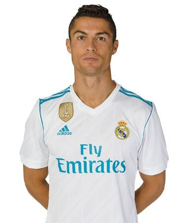

Who has scored the most goals between Messi and Ronaldo? Ronaldo has scored 804 goals in 1106 games while Messi has scored 759 goals in 957 games.
About 286,000,000 results (0.57 seconds)
Cristiano Ronaldo
Portuguese footballer


sky sports. sky sports
Cristiano Ronaldo: I hope he stays in Premier League says...
Gary Neville hopes Cristiano Ronaldo...
16 mins ago
Age
37 years old (5 February 1985)
Current team
Portugal national football team

Cristiano Ronaldo (Cristiano)...
571m Followers
522 Following
3414 Posts

Wikipedia
https://en.wikipedia.org/wiki/Cristiano_Ronaldo _
Cristiano Ronaldo
Cristiano Ronaldo dos Santos Aveiro GOIH ComM is a Portuguese professional footballer who plays as a forward and captains the Portugal national team.
People also ask
Who is No 1 Messi or Ronaldo?
How many cars does Ronaldo have?
How many cars are there Ronaldo have? World's richest footballer Cristiano Ronaldo's love for cars is something every CR7 fan is well aware of. Right from Bugatti to McLaren the Portugal star owns one of the most expensive cars in the world. Ronaldo is a proud owner of more than 20 luxurious cars.
How many goals Ronaldo scored?
On the trophy front, Ronaldo led Madrid to Champions League success four times, while helping them win two La Liga titles. At an individual level, he won the Ballon d'Or four times, the most by a European player.
Who is the GOAT of football?
Lionel Messi of Argentina is undoubtedly the GOAT of football in the 21st century. The acronym GOAT stands for Greatest of All Time and Messi is unquestionably the greatest of all time when it comes to football in the modern era.

CR7
https://www.cristianoronaldo.com
Cristiano Ronaldo | Official Website
Cristiano Ronaldo's highlights and achievements. View Highlights.

Transfermarkt
https://www.transfermarkt.com
Cristiano Ronaldo - Player Profile 22/23
Cristiano Ronaldo, 37, from Portugal ➤ Al-Nassr FC, since 2022 ➤ Centre-Forward ➤ Market value: €20.00m ➤ * Feb 5, 1985 in Funchal, Portugal.
https://www.instagram.com ➤ cristiano
Cristiano
527m Followers, 523 Following, 3416 Posts - See Instagram photos and videos from Cristiano Ronaldo (@cristiano)

https://www.twitter.com ➤ cristiano
Cristiano Ronaldo
Cristiano Ronaldo · @Cristiano. ·. Dec 9, 2022. Há um Mundial que Portugal já ganhou: o dos adeptos! Incrível o apoio e o carinho que temos sentido de ...
Daily Mail
https://www.dialymail.co.uk sports ➤ cristiano
Cristiano Ronaldo News, Stats and Updates
Get the latest on Cristiano Ronaldo following his bombshell exit from Manchester United . ... IAN LADYMAN: Cristiano Ronaldo's move to Saudi Arabia is so sad.
About
Cristiano Ronaldo dos Santos Aveiro GOIH ComM is a Portuguese professional footballer who plays as a forward for Saudi Professional League club Al Nassr and captains the Portugal national team. Wikipedia
Born:5 February 1985 (age 37 years), Hospital Dr. Nélio Mendonça, Funchal, Portugal
Dates joined: 2022 (Al-Nassr FC, Al-Nassr FC), MORE
Heigths: 1.87 m
Salary: 62 million GBP (2023)